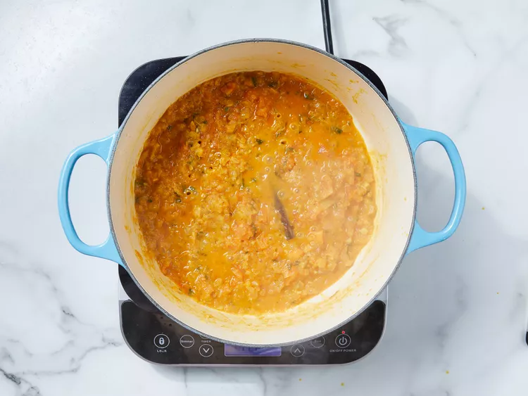
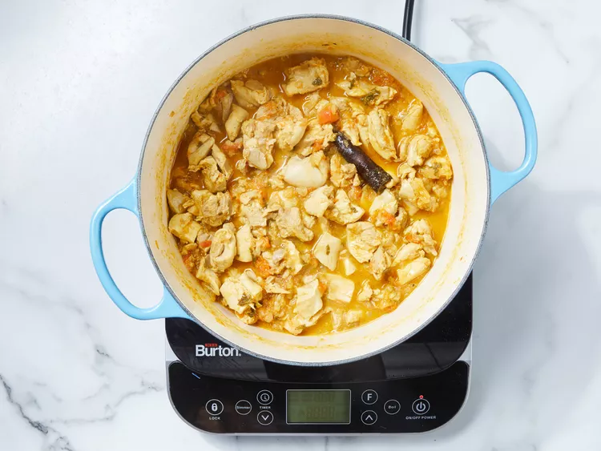
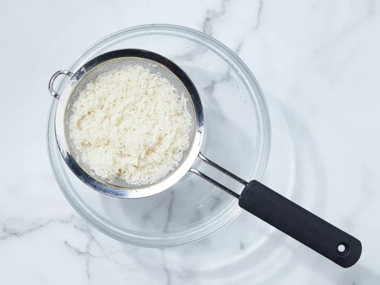
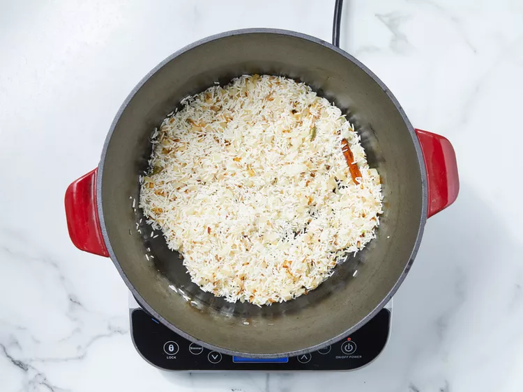

Chicken biryani is a delicious Pakistani/Indian rice dish that's typically reserved for special occasions such as weddings, parties, or holidays such as Ramadan. It has a lengthy preparation, but the work is definitely worth it. For biryani, basmati rice is the ideal variety to use.
Gather all Ingredients

Heat 2 tablespoons of oil in a large skillet. Fry potatoes in hot oil until lightly browned, about 3 to 5 minutes. Remove to a paper towel-lined plate to drain; set aside.

Add remaining 2 tablespoons of oil to the skillet. Add onions, garlic, and fresh ginger; cook and stir until onion is soft and golden. Add tomatoes, salt, cumin, chili powder, pepper, and turmeric; cook, stirring constantly, for 5 minutes.

Stir in yogurt, mint, ground cardamom, and cinnamon stick. Cover and cook over low heat, stirring occasionally, until tomatoes are cooked to a pulp. It may be necessary to add a little hot water if mixture becomes too dry and starts to stick to the pan.
Add chicken and stir well to coat. Cover and cook over very low heat until chicken is tender, 35 to 45 minutes. There should only be a little very thick gravy left when chicken is finished cooking. If necessary cook uncovered for a few minutes to reduce the gravy.
Meanwhile, make the rice: Wash rice well and drain in a colander for at least 30 minutes.
Heat oil in a large skillet. Add onion; cook and stir until golden. Add cardamom pods, cloves, cinnamon stick, ground ginger, and saffron; stir in rice until coated with spices.
Heat stock and salt in a medium pot until hot; pour over rice and stir well.

Add chicken mixture and potatoes; stir gently to combine. Bring to a boil.

Reduce heat to very low, cover with a tight-fitting lid, and steam for 20 minutes without lifting the lid or stirring.

Spoon biryani onto a warm serving dish.